Pandas 1 - Introduction#
Download exercises zip#
Python gives powerful tools for data analysis - among the main ones we find Pandas, which gives fast and flexible data structures, especially for interactive data analysis.
Pandas reuses existing libraries we’ve already seen, such as Numpy:
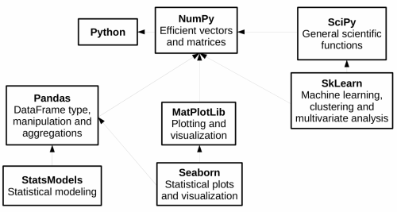
In this first part of the tutorial we will see:
filtering and transformation operations on Pandas dataframes
plotting with MatPlotLib
Examples with AstroPi dataset
Exercises with meteotrentino and other datasets
1. What to do#
unzip exercises in a folder, you should get something like this:
pandas
pandas1-intro.ipynb
pandas1-intro-sol.ipynb
pandas2-advanced.ipynb
pandas2-advanced-sol.ipynb
pandas3-chal.ipynb
jupman.py
WARNING 1: to correctly visualize the notebook, it MUST be in an unzipped folder !
open Jupyter Notebook from that folder. Two things should open, first a console and then browser.
The browser should show a file list: navigate the list and open the notebook
pandas/pandas1.ipynb
WARNING 2: DO NOT use the Upload button in Jupyter, instead navigate in Jupyter browser to the unzipped folder !
Go on reading that notebook, and follow instuctions inside.
Shortcut keys:
to execute Python code inside a Jupyter cell, press
Control + Enterto execute Python code inside a Jupyter cell AND select next cell, press
Shift + Enterto execute Python code inside a Jupyter cell AND a create a new cell aftwerwards, press
Alt + EnterIf the notebooks look stuck, try to select
Kernel -> Restart
Check installation#
First let’s see if you have already installed pandas on your system, try executing this cell with Ctrl Enter:
[1]:
import pandas as pd
If you saw no error messages, you can skip installation, otherwise do this:
Anaconda - open Anaconda Prompt and issue this:
conda install pandas
Without Anaconda (
--userinstalls in your home):
python3 -m pip install --user pandas
2. Data analysis of Astro Pi#
Let’s try analyzing data recorded on a RaspberryPi electronic board installed on the International Space Station (ISS). Data was downloaded from here:
https://projects.raspberrypi.org/en/projects/astro-pi-flight-data-analysis
In the website it’s possible to find a detailed description of data gathered by sensors, in the month of February 2016 (one record each 10 seconds).
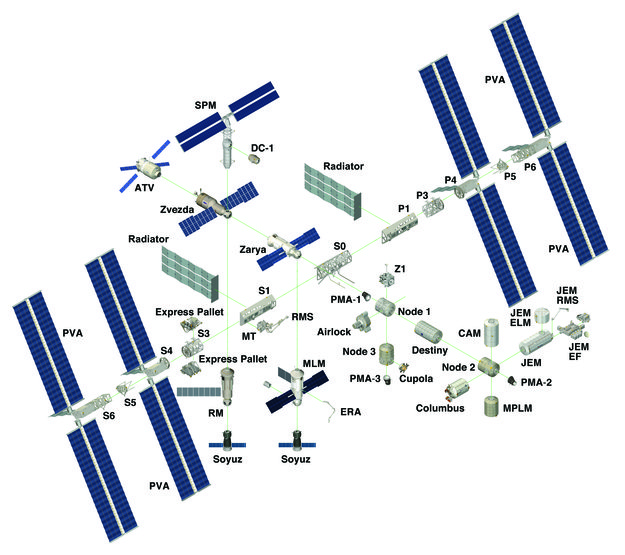
2.1 Let’s import the file#
The method read_csv imports data from a CSV file and saves them in a DataFrame structure.
In this exercise we shall use the file astropi.csv (slightly modified by replacing ROW_ID column with the time_stamp)
[ ]:
import pandas as pd # we import pandas and for ease we rename it to 'pd'
import numpy as np # we import numpy and for ease we rename it to 'np'
# remember the encoding !
df = pd.read_csv('data/astropi.csv', encoding='UTF-8')
df.info()
<class 'pandas.core.frame.DataFrame'>
RangeIndex: 110869 entries, 0 to 110868
Data columns (total 19 columns):
# Column Non-Null Count Dtype
--- ------ -------------- -----
0 time_stamp 110869 non-null object
1 temp_cpu 110869 non-null float64
2 temp_h 110869 non-null float64
3 temp_p 110869 non-null float64
4 humidity 110869 non-null float64
5 pressure 110869 non-null float64
6 pitch 110869 non-null float64
7 roll 110869 non-null float64
8 yaw 110869 non-null float64
9 mag_x 110869 non-null float64
10 mag_y 110869 non-null float64
11 mag_z 110869 non-null float64
12 accel_x 110869 non-null float64
13 accel_y 110869 non-null float64
14 accel_z 110869 non-null float64
15 gyro_x 110869 non-null float64
16 gyro_y 110869 non-null float64
17 gyro_z 110869 non-null float64
18 reset 110869 non-null int64
dtypes: float64(17), int64(1), object(1)
memory usage: 16.1+ MB
2.2 Memory#
PAndas loads the dataset from hard disk to your computer RAM memory. If by chance your dataset were bigger than available RAM, you would get an error and should start thinking about other tools to perform your analysis. You might also get troubles when making copies of the dataframe. It’s then very important to understand how much the dataset actually occupies in RAM. If you look at the bottom, you will see written memory usage: 16.1 MB but pay attention to that +: Pandas is telling us
the dataset occupies in RAM at least 16.1 Mb, but the actual dimension could be greater.
To see the actual occupied space, try adding the parameter memory_usage="deep" to the df.info call. The parameter is option because according to the dataset it might take some time to calculate. Do you notice any difference?
How much space is taken by the original file on your disk? Try to find it by looking in Windows Explorer.
[ ]:
df.info(memory_usage="deep")
<class 'pandas.core.frame.DataFrame'>
RangeIndex: 110869 entries, 0 to 110868
Data columns (total 19 columns):
# Column Non-Null Count Dtype
--- ------ -------------- -----
0 time_stamp 110869 non-null object
1 temp_cpu 110869 non-null float64
2 temp_h 110869 non-null float64
3 temp_p 110869 non-null float64
4 humidity 110869 non-null float64
5 pressure 110869 non-null float64
6 pitch 110869 non-null float64
7 roll 110869 non-null float64
8 yaw 110869 non-null float64
9 mag_x 110869 non-null float64
10 mag_y 110869 non-null float64
11 mag_z 110869 non-null float64
12 accel_x 110869 non-null float64
13 accel_y 110869 non-null float64
14 accel_z 110869 non-null float64
15 gyro_x 110869 non-null float64
16 gyro_y 110869 non-null float64
17 gyro_z 110869 non-null float64
18 reset 110869 non-null int64
dtypes: float64(17), int64(1), object(1)
memory usage: 23.3 MB
2.3 Dimensions#
We can quickly see rows and columns of the dataframe with the attribute shape:
NOTE: shape is not followed by round parenthesis !
[4]:
df.shape
[4]:
(110869, 19)
2.4 Let’s explore!#
[5]:
df
[5]:
| time_stamp | temp_cpu | temp_h | temp_p | humidity | pressure | pitch | roll | yaw | mag_x | mag_y | mag_z | accel_x | accel_y | accel_z | gyro_x | gyro_y | gyro_z | reset | |
|---|---|---|---|---|---|---|---|---|---|---|---|---|---|---|---|---|---|---|---|
| 0 | 2016-02-16 10:44:40 | 31.88 | 27.57 | 25.01 | 44.94 | 1001.68 | 1.49 | 52.25 | 185.21 | -46.422753 | -8.132907 | -12.129346 | -0.000468 | 0.019439 | 0.014569 | 0.000942 | 0.000492 | -0.000750 | 20 |
| 1 | 2016-02-16 10:44:50 | 31.79 | 27.53 | 25.01 | 45.12 | 1001.72 | 1.03 | 53.73 | 186.72 | -48.778951 | -8.304243 | -12.943096 | -0.000614 | 0.019436 | 0.014577 | 0.000218 | -0.000005 | -0.000235 | 0 |
| 2 | 2016-02-16 10:45:00 | 31.66 | 27.53 | 25.01 | 45.12 | 1001.72 | 1.24 | 53.57 | 186.21 | -49.161878 | -8.470832 | -12.642772 | -0.000569 | 0.019359 | 0.014357 | 0.000395 | 0.000600 | -0.000003 | 0 |
| 3 | 2016-02-16 10:45:10 | 31.69 | 27.52 | 25.01 | 45.32 | 1001.69 | 1.57 | 53.63 | 186.03 | -49.341941 | -8.457380 | -12.615509 | -0.000575 | 0.019383 | 0.014409 | 0.000308 | 0.000577 | -0.000102 | 0 |
| 4 | 2016-02-16 10:45:20 | 31.66 | 27.54 | 25.01 | 45.18 | 1001.71 | 0.85 | 53.66 | 186.46 | -50.056683 | -8.122609 | -12.678341 | -0.000548 | 0.019378 | 0.014380 | 0.000321 | 0.000691 | 0.000272 | 0 |
| ... | ... | ... | ... | ... | ... | ... | ... | ... | ... | ... | ... | ... | ... | ... | ... | ... | ... | ... | ... |
| 110864 | 2016-02-29 09:24:21 | 31.56 | 27.52 | 24.83 | 42.94 | 1005.83 | 1.58 | 49.93 | 129.60 | -15.169673 | -27.642610 | 1.563183 | -0.000682 | 0.017743 | 0.014646 | -0.000264 | 0.000206 | 0.000196 | 0 |
| 110865 | 2016-02-29 09:24:30 | 31.55 | 27.50 | 24.83 | 42.72 | 1005.85 | 1.89 | 49.92 | 130.51 | -15.832622 | -27.729389 | 1.785682 | -0.000736 | 0.017570 | 0.014855 | 0.000143 | 0.000199 | -0.000024 | 0 |
| 110866 | 2016-02-29 09:24:41 | 31.58 | 27.50 | 24.83 | 42.83 | 1005.85 | 2.09 | 50.00 | 132.04 | -16.646212 | -27.719479 | 1.629533 | -0.000647 | 0.017657 | 0.014799 | 0.000537 | 0.000257 | 0.000057 | 0 |
| 110867 | 2016-02-29 09:24:50 | 31.62 | 27.50 | 24.83 | 42.81 | 1005.88 | 2.88 | 49.69 | 133.00 | -17.270447 | -27.793136 | 1.703806 | -0.000835 | 0.017635 | 0.014877 | 0.000534 | 0.000456 | 0.000195 | 0 |
| 110868 | 2016-02-29 09:25:00 | 31.57 | 27.51 | 24.83 | 42.94 | 1005.86 | 2.17 | 49.77 | 134.18 | -17.885872 | -27.824149 | 1.293345 | -0.000787 | 0.017261 | 0.014380 | 0.000459 | 0.000076 | 0.000030 | 0 |
110869 rows × 19 columns
Note the first bold numerical column is an integer index that was automatically assigned by Pandas when the dataset got loaded. Note also it starts from zero. If we wanted, we could set a different index but we won’t do it in this tutorial.
head() method gives back the first datasets:
[6]:
df.head()
[6]:
| time_stamp | temp_cpu | temp_h | temp_p | humidity | pressure | pitch | roll | yaw | mag_x | mag_y | mag_z | accel_x | accel_y | accel_z | gyro_x | gyro_y | gyro_z | reset | |
|---|---|---|---|---|---|---|---|---|---|---|---|---|---|---|---|---|---|---|---|
| 0 | 2016-02-16 10:44:40 | 31.88 | 27.57 | 25.01 | 44.94 | 1001.68 | 1.49 | 52.25 | 185.21 | -46.422753 | -8.132907 | -12.129346 | -0.000468 | 0.019439 | 0.014569 | 0.000942 | 0.000492 | -0.000750 | 20 |
| 1 | 2016-02-16 10:44:50 | 31.79 | 27.53 | 25.01 | 45.12 | 1001.72 | 1.03 | 53.73 | 186.72 | -48.778951 | -8.304243 | -12.943096 | -0.000614 | 0.019436 | 0.014577 | 0.000218 | -0.000005 | -0.000235 | 0 |
| 2 | 2016-02-16 10:45:00 | 31.66 | 27.53 | 25.01 | 45.12 | 1001.72 | 1.24 | 53.57 | 186.21 | -49.161878 | -8.470832 | -12.642772 | -0.000569 | 0.019359 | 0.014357 | 0.000395 | 0.000600 | -0.000003 | 0 |
| 3 | 2016-02-16 10:45:10 | 31.69 | 27.52 | 25.01 | 45.32 | 1001.69 | 1.57 | 53.63 | 186.03 | -49.341941 | -8.457380 | -12.615509 | -0.000575 | 0.019383 | 0.014409 | 0.000308 | 0.000577 | -0.000102 | 0 |
| 4 | 2016-02-16 10:45:20 | 31.66 | 27.54 | 25.01 | 45.18 | 1001.71 | 0.85 | 53.66 | 186.46 | -50.056683 | -8.122609 | -12.678341 | -0.000548 | 0.019378 | 0.014380 | 0.000321 | 0.000691 | 0.000272 | 0 |
tail() method gives back last rows:
[7]:
df.tail()
[7]:
| time_stamp | temp_cpu | temp_h | temp_p | humidity | pressure | pitch | roll | yaw | mag_x | mag_y | mag_z | accel_x | accel_y | accel_z | gyro_x | gyro_y | gyro_z | reset | |
|---|---|---|---|---|---|---|---|---|---|---|---|---|---|---|---|---|---|---|---|
| 110864 | 2016-02-29 09:24:21 | 31.56 | 27.52 | 24.83 | 42.94 | 1005.83 | 1.58 | 49.93 | 129.60 | -15.169673 | -27.642610 | 1.563183 | -0.000682 | 0.017743 | 0.014646 | -0.000264 | 0.000206 | 0.000196 | 0 |
| 110865 | 2016-02-29 09:24:30 | 31.55 | 27.50 | 24.83 | 42.72 | 1005.85 | 1.89 | 49.92 | 130.51 | -15.832622 | -27.729389 | 1.785682 | -0.000736 | 0.017570 | 0.014855 | 0.000143 | 0.000199 | -0.000024 | 0 |
| 110866 | 2016-02-29 09:24:41 | 31.58 | 27.50 | 24.83 | 42.83 | 1005.85 | 2.09 | 50.00 | 132.04 | -16.646212 | -27.719479 | 1.629533 | -0.000647 | 0.017657 | 0.014799 | 0.000537 | 0.000257 | 0.000057 | 0 |
| 110867 | 2016-02-29 09:24:50 | 31.62 | 27.50 | 24.83 | 42.81 | 1005.88 | 2.88 | 49.69 | 133.00 | -17.270447 | -27.793136 | 1.703806 | -0.000835 | 0.017635 | 0.014877 | 0.000534 | 0.000456 | 0.000195 | 0 |
| 110868 | 2016-02-29 09:25:00 | 31.57 | 27.51 | 24.83 | 42.94 | 1005.86 | 2.17 | 49.77 | 134.18 | -17.885872 | -27.824149 | 1.293345 | -0.000787 | 0.017261 | 0.014380 | 0.000459 | 0.000076 | 0.000030 | 0 |
2.5 Some stats#
The describe method gives you much summary info on the fly:
rows counting
the average
minimum and maximum
[8]:
df.describe()
[8]:
| temp_cpu | temp_h | temp_p | humidity | pressure | pitch | roll | yaw | mag_x | mag_y | mag_z | accel_x | accel_y | accel_z | gyro_x | gyro_y | gyro_z | reset | |
|---|---|---|---|---|---|---|---|---|---|---|---|---|---|---|---|---|---|---|
| count | 110869.000000 | 110869.000000 | 110869.000000 | 110869.000000 | 110869.000000 | 110869.000000 | 110869.000000 | 110869.00000 | 110869.000000 | 110869.000000 | 110869.000000 | 110869.000000 | 110869.000000 | 110869.000000 | 1.108690e+05 | 110869.000000 | 1.108690e+05 | 110869.000000 |
| mean | 32.236259 | 28.101773 | 25.543272 | 46.252005 | 1008.126788 | 2.770553 | 51.807973 | 200.90126 | -19.465265 | -1.174493 | -6.004529 | -0.000630 | 0.018504 | 0.014512 | -8.959493e-07 | 0.000007 | -9.671594e-07 | 0.000180 |
| std | 0.360289 | 0.369256 | 0.380877 | 1.907273 | 3.093485 | 21.848940 | 2.085821 | 84.47763 | 28.120202 | 15.655121 | 8.552481 | 0.000224 | 0.000604 | 0.000312 | 2.807614e-03 | 0.002456 | 2.133104e-03 | 0.060065 |
| min | 31.410000 | 27.200000 | 24.530000 | 42.270000 | 1001.560000 | 0.000000 | 30.890000 | 0.01000 | -73.046240 | -43.810030 | -41.163040 | -0.025034 | -0.005903 | -0.022900 | -3.037930e-01 | -0.378412 | -2.970800e-01 | 0.000000 |
| 25% | 31.960000 | 27.840000 | 25.260000 | 45.230000 | 1006.090000 | 1.140000 | 51.180000 | 162.43000 | -41.742792 | -12.982321 | -11.238430 | -0.000697 | 0.018009 | 0.014349 | -2.750000e-04 | -0.000278 | -1.200000e-04 | 0.000000 |
| 50% | 32.280000 | 28.110000 | 25.570000 | 46.130000 | 1007.650000 | 1.450000 | 51.950000 | 190.58000 | -21.339485 | -1.350467 | -5.764400 | -0.000631 | 0.018620 | 0.014510 | -3.000000e-06 | -0.000004 | -1.000000e-06 | 0.000000 |
| 75% | 32.480000 | 28.360000 | 25.790000 | 46.880000 | 1010.270000 | 1.740000 | 52.450000 | 256.34000 | 7.299000 | 11.912456 | -0.653705 | -0.000567 | 0.018940 | 0.014673 | 2.710000e-04 | 0.000271 | 1.190000e-04 | 0.000000 |
| max | 33.700000 | 29.280000 | 26.810000 | 60.590000 | 1021.780000 | 360.000000 | 359.400000 | 359.98000 | 33.134748 | 37.552135 | 31.003047 | 0.018708 | 0.041012 | 0.029938 | 2.151470e-01 | 0.389499 | 2.698760e-01 | 20.000000 |
QUESTION: is there some missing field from the table produced by describe? Why is it not included?
With corr method we can see the correlation between DataFrame columns.
[9]:
df.corr()
[9]:
| temp_cpu | temp_h | temp_p | humidity | pressure | pitch | roll | yaw | mag_x | mag_y | mag_z | accel_x | accel_y | accel_z | gyro_x | gyro_y | gyro_z | reset | |
|---|---|---|---|---|---|---|---|---|---|---|---|---|---|---|---|---|---|---|
| temp_cpu | 1.000000 | 0.986872 | 0.991672 | -0.297081 | 0.038065 | 0.008076 | -0.171644 | -0.117972 | 0.005145 | -0.285192 | -0.120838 | -0.023582 | -0.446358 | -0.029155 | 0.002511 | 0.005947 | -0.001250 | -0.002970 |
| temp_h | 0.986872 | 1.000000 | 0.993260 | -0.281422 | 0.070882 | 0.005145 | -0.199628 | -0.117870 | 0.000428 | -0.276276 | -0.098864 | -0.032188 | -0.510126 | -0.043213 | 0.001771 | 0.005020 | -0.001423 | -0.004325 |
| temp_p | 0.991672 | 0.993260 | 1.000000 | -0.288373 | 0.035496 | 0.006750 | -0.163685 | -0.118463 | 0.004338 | -0.283427 | -0.114407 | -0.018047 | -0.428884 | -0.036505 | 0.001829 | 0.006127 | -0.001623 | -0.004205 |
| humidity | -0.297081 | -0.281422 | -0.288373 | 1.000000 | 0.434374 | 0.004050 | 0.101304 | 0.031664 | -0.035146 | 0.077897 | 0.076424 | -0.009741 | 0.226281 | 0.005281 | 0.004345 | 0.003457 | 0.001298 | -0.002066 |
| pressure | 0.038065 | 0.070882 | 0.035496 | 0.434374 | 1.000000 | 0.003018 | 0.011815 | -0.051697 | -0.040183 | -0.074578 | 0.092352 | 0.013556 | -0.115642 | -0.221208 | -0.000611 | -0.002493 | -0.000615 | -0.006259 |
| pitch | 0.008076 | 0.005145 | 0.006750 | 0.004050 | 0.003018 | 1.000000 | 0.087941 | -0.011611 | 0.013331 | 0.006133 | 0.000540 | 0.043285 | 0.009015 | -0.039146 | 0.066618 | -0.015034 | 0.049340 | -0.000176 |
| roll | -0.171644 | -0.199628 | -0.163685 | 0.101304 | 0.011815 | 0.087941 | 1.000000 | 0.095354 | -0.020947 | 0.060297 | -0.080620 | 0.116637 | 0.462630 | -0.167905 | -0.115873 | -0.002509 | -0.214202 | 0.000636 |
| yaw | -0.117972 | -0.117870 | -0.118463 | 0.031664 | -0.051697 | -0.011611 | 0.095354 | 1.000000 | 0.257971 | 0.549394 | -0.328360 | 0.006943 | 0.044157 | -0.013634 | 0.003106 | 0.003665 | 0.004020 | -0.000558 |
| mag_x | 0.005145 | 0.000428 | 0.004338 | -0.035146 | -0.040183 | 0.013331 | -0.020947 | 0.257971 | 1.000000 | 0.001239 | -0.213070 | -0.006629 | 0.027921 | 0.021524 | -0.004954 | -0.004429 | -0.005052 | -0.002879 |
| mag_y | -0.285192 | -0.276276 | -0.283427 | 0.077897 | -0.074578 | 0.006133 | 0.060297 | 0.549394 | 0.001239 | 1.000000 | -0.266351 | 0.014057 | 0.051619 | -0.053016 | 0.001239 | 0.001063 | 0.001530 | -0.001335 |
| mag_z | -0.120838 | -0.098864 | -0.114407 | 0.076424 | 0.092352 | 0.000540 | -0.080620 | -0.328360 | -0.213070 | -0.266351 | 1.000000 | 0.024718 | -0.083914 | -0.061317 | -0.008470 | -0.009557 | -0.008997 | -0.002151 |
| accel_x | -0.023582 | -0.032188 | -0.018047 | -0.009741 | 0.013556 | 0.043285 | 0.116637 | 0.006943 | -0.006629 | 0.014057 | 0.024718 | 1.000000 | 0.095286 | -0.262305 | 0.035314 | 0.103449 | 0.197740 | 0.002173 |
| accel_y | -0.446358 | -0.510126 | -0.428884 | 0.226281 | -0.115642 | 0.009015 | 0.462630 | 0.044157 | 0.027921 | 0.051619 | -0.083914 | 0.095286 | 1.000000 | 0.120215 | 0.043263 | -0.046463 | 0.009541 | 0.004648 |
| accel_z | -0.029155 | -0.043213 | -0.036505 | 0.005281 | -0.221208 | -0.039146 | -0.167905 | -0.013634 | 0.021524 | -0.053016 | -0.061317 | -0.262305 | 0.120215 | 1.000000 | 0.078315 | -0.075625 | 0.057075 | 0.000554 |
| gyro_x | 0.002511 | 0.001771 | 0.001829 | 0.004345 | -0.000611 | 0.066618 | -0.115873 | 0.003106 | -0.004954 | 0.001239 | -0.008470 | 0.035314 | 0.043263 | 0.078315 | 1.000000 | -0.248968 | 0.337553 | 0.001009 |
| gyro_y | 0.005947 | 0.005020 | 0.006127 | 0.003457 | -0.002493 | -0.015034 | -0.002509 | 0.003665 | -0.004429 | 0.001063 | -0.009557 | 0.103449 | -0.046463 | -0.075625 | -0.248968 | 1.000000 | 0.190112 | 0.000593 |
| gyro_z | -0.001250 | -0.001423 | -0.001623 | 0.001298 | -0.000615 | 0.049340 | -0.214202 | 0.004020 | -0.005052 | 0.001530 | -0.008997 | 0.197740 | 0.009541 | 0.057075 | 0.337553 | 0.190112 | 1.000000 | -0.001055 |
| reset | -0.002970 | -0.004325 | -0.004205 | -0.002066 | -0.006259 | -0.000176 | 0.000636 | -0.000558 | -0.002879 | -0.001335 | -0.002151 | 0.002173 | 0.004648 | 0.000554 | 0.001009 | 0.000593 | -0.001055 | 1.000000 |
2.6 Let’s look at the columns#
colums property gives the column headers:
[10]:
df.columns
[10]:
Index(['time_stamp', 'temp_cpu', 'temp_h', 'temp_p', 'humidity', 'pressure',
'pitch', 'roll', 'yaw', 'mag_x', 'mag_y', 'mag_z', 'accel_x', 'accel_y',
'accel_z', 'gyro_x', 'gyro_y', 'gyro_z', 'reset'],
dtype='object')
As you see in the above, the type of the found object is not a list, but a special container defined by pandas:
[11]:
type(df.columns)
[11]:
pandas.core.indexes.base.Index
Nevertheless, we can access the elements of this container using indeces within the squared parenthesis:
[12]:
df.columns[0]
[12]:
'time_stamp'
[13]:
df.columns[1]
[13]:
'temp_cpu'
2.7 What is a column?#
We can access a column like this:
[14]:
df['humidity']
[14]:
0 44.94
1 45.12
2 45.12
3 45.32
4 45.18
...
110864 42.94
110865 42.72
110866 42.83
110867 42.81
110868 42.94
Name: humidity, Length: 110869, dtype: float64
Even handier, we can use the dot notation:
[15]:
df.humidity
[15]:
0 44.94
1 45.12
2 45.12
3 45.32
4 45.18
...
110864 42.94
110865 42.72
110866 42.83
110867 42.81
110868 42.94
Name: humidity, Length: 110869, dtype: float64
WARNING: they look like two columns, but it’s actually only one!
The sequence of numbers on the left is the integer index that Pandas automatically assigned to the dataset when it was created (notice it starts from zero).
WARNING: Careful about spaces!:
In case the field name has spaces (es. 'blender rotations'), do not use the dot notation, instead use squared bracket notation seen above (ie: df.['blender rotations'])
The type of a column is Series:
[16]:
type(df.humidity)
[16]:
pandas.core.series.Series
Some operations also work on single columns, i.e. .describe():
[17]:
df.humidity.describe()
[17]:
count 110869.000000
mean 46.252005
std 1.907273
min 42.270000
25% 45.230000
50% 46.130000
75% 46.880000
max 60.590000
Name: humidity, dtype: float64
2.8 Exercise - meteo info#
✪ a) Create a new dataframe called meteo by importing the data from file meteo.csv, which contains the meteo data of Trento from November 2017 (source: www.meteotrentino.it). IMPORTANT: assign the dataframe to a variable called meteo (so we avoid confusion whith AstroPi dataframe)
Visualize info about this dataframe
[ ]:
# write here
Show solution
[ ]:
meteo = pd.read_csv('data/meteo.csv', encoding='UTF-8')
print("COLUMNS:", ', '.join(meteo.columns))
print()
print(meteo.columns)
print()
print("INFO:")
print(meteo.info())
print()
print("FIRST ROWS:")
print(meteo.head())
3. MatPlotLib review#
We’ve already seen MatplotLib in the part on visualization, and today we use Matplotlib to display data.
3.1 An example#
Let’s take again an example, with the Matlab approach. We will plot a line passing two lists of coordinates, one for xs and one for ys:
[19]:
import matplotlib as mpl
import matplotlib.pyplot as plt
%matplotlib inline
xs = [ 1, 2, 3, 4]
ys = [ 7, 6,10, 8]
plt.plot(xs, ys) # we can directly pass xs and ys lists
plt.title('An example')
plt.show()
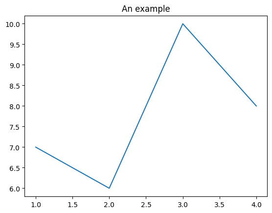
We can also create the series with numpy. Let’s try a parabola:
[20]:
import numpy as np
xs = np.arange(0.,5.,0.1)
# '**' is the power operator in Python, NOT '^'
ys = xs**2
Let’s use the type function to understand which data types are xs and ys:
[21]:
type(xs)
[21]:
numpy.ndarray
[22]:
type(ys)
[22]:
numpy.ndarray
Hence we have NumPy arrays.
Let’s plot it:
[23]:
plt.title('The parabola')
plt.plot(xs,ys);
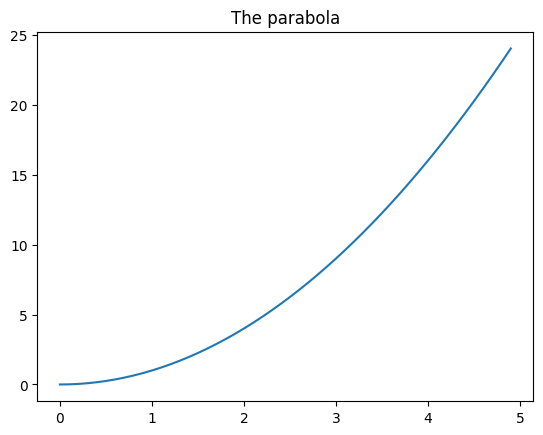
If we want the same units in both x and y axis, we can use the gca function
To set x and y limits, we can use xlim e ylim:
[24]:
plt.xlim([0, 5])
plt.ylim([0,10])
plt.title('The parabola')
plt.gca().set_aspect('equal')
plt.plot(xs,ys);
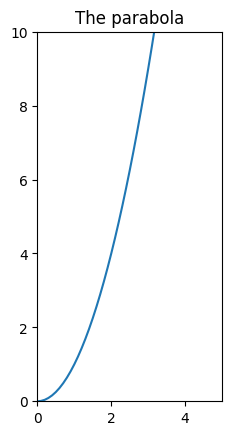
3.2 Matplotlib plots from pandas datastructures#
We can get plots directly from pandas data structures using the matlab style. Let’s make a simple example, for more complex cases we refer to DataFrame.plot documentation.
In case of big quantity of data, it may be useful to have a qualitative idea of data by putting them in a plot:
[25]:
df.humidity.plot(label="Humidity", legend=True)
# with secondary_y=True we display number on y axis
# of graph on the right
df.pressure.plot(secondary_y=True, label="Pressure", legend=True);
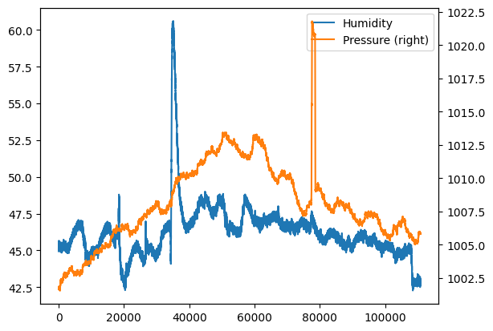
If we want, we can always directly use the original function plt.plot, it’s sufficient to pass a sequence for the x coordinates and another one for the ys. For example, if we wanted to replicate the above example for humidity, for the x coordinates we could extract the dataframe index which is an iterable:
[26]:
df.index
[26]:
RangeIndex(start=0, stop=110869, step=1)
and then pass it to plt.plot as first parameter. As second parameter, we can directly pass the humidity Series: since it’s also an iterable, Python will automatically be able to get the cells values:
[27]:
plt.plot(df.index, df['humidity'])
plt.show() # prevents visualization of weird characters
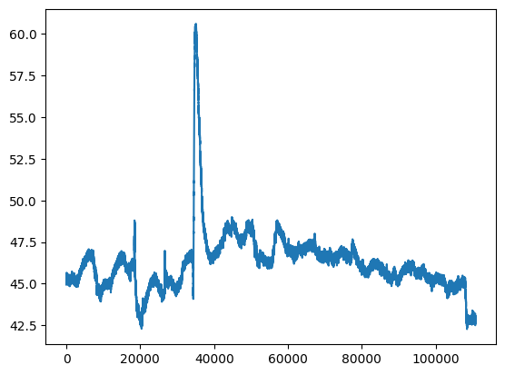
4. Operations on rows#
If we consider the rows of a dataset, typically we will want to index, filter and order them.
4.1 Indexing integers#
We report here the simplest indexing with row numbers.
To obtain the i-th series you can use the method iloc[i] (here we reuse AstroPi dataset) :
[28]:
df.iloc[6]
[28]:
time_stamp 2016-02-16 10:45:41
temp_cpu 31.68
temp_h 27.53
temp_p 25.01
humidity 45.31
pressure 1001.7
pitch 0.63
roll 53.55
yaw 186.1
mag_x -50.447346
mag_y -7.937309
mag_z -12.188574
accel_x -0.00051
accel_y 0.019264
accel_z 0.014528
gyro_x -0.000111
gyro_y 0.00032
gyro_z 0.000222
reset 0
Name: 6, dtype: object
It’s possible to select a dataframe of contiguous positions by using slicing, as we already did for strings and lists
For example, here we select the rows from 5th included to 7-th excluded :
[29]:
df.iloc[5:7]
[29]:
| time_stamp | temp_cpu | temp_h | temp_p | humidity | pressure | pitch | roll | yaw | mag_x | mag_y | mag_z | accel_x | accel_y | accel_z | gyro_x | gyro_y | gyro_z | reset | |
|---|---|---|---|---|---|---|---|---|---|---|---|---|---|---|---|---|---|---|---|
| 5 | 2016-02-16 10:45:30 | 31.69 | 27.55 | 25.01 | 45.12 | 1001.67 | 0.85 | 53.53 | 185.52 | -50.246476 | -8.343209 | -11.938124 | -0.000536 | 0.019453 | 0.014380 | 0.000273 | 0.000494 | -0.000059 | 0 |
| 6 | 2016-02-16 10:45:41 | 31.68 | 27.53 | 25.01 | 45.31 | 1001.70 | 0.63 | 53.55 | 186.10 | -50.447346 | -7.937309 | -12.188574 | -0.000510 | 0.019264 | 0.014528 | -0.000111 | 0.000320 | 0.000222 | 0 |
By filtering the rows we can ‘zoom in’ the dataset, selecting for example the rows between the 12500th (included) and the 15000th (excluded) in the new dataframe df2:
[30]:
df2=df.iloc[12500:15000]
[31]:
plt.plot(df2.index, df2['humidity'])
[31]:
[<matplotlib.lines.Line2D at 0x7fbb1c78ae90>]
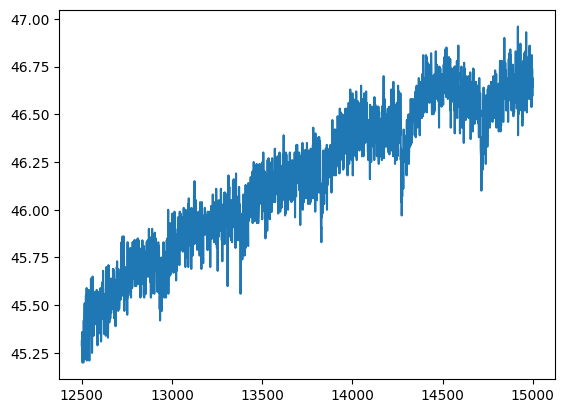
[32]:
df2.humidity.plot(label="Humidity", legend=True)
df2.pressure.plot(secondary_y=True, label="Pressure", legend=True)
plt.show() # prevents visualization of weird characters
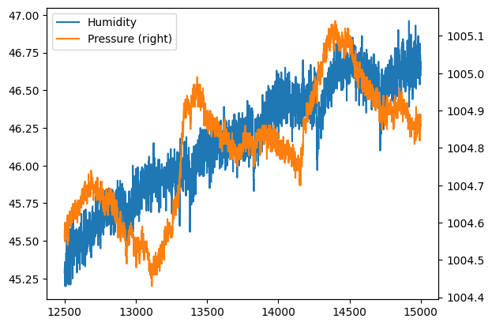
Difference between iloc and loc#
iloc always uses an integer and returns always the row in the natural order of the dataframe we are inspecting.
loc on the other hand searches in the index assigned by pandas, which is the one you can see in bold when we show the dataset.
Apparently they look similar but the difference between them becomes evident whenever we act on filtered dataframes. Let’s check the first rows of the filtered dataframe df2:
[33]:
df2.head()
[33]:
| time_stamp | temp_cpu | temp_h | temp_p | humidity | pressure | pitch | roll | yaw | mag_x | mag_y | mag_z | accel_x | accel_y | accel_z | gyro_x | gyro_y | gyro_z | reset | |
|---|---|---|---|---|---|---|---|---|---|---|---|---|---|---|---|---|---|---|---|
| 12500 | 2016-02-17 21:44:31 | 31.87 | 27.7 | 25.15 | 45.29 | 1004.56 | 0.85 | 52.78 | 357.18 | 30.517177 | 2.892431 | 0.371669 | -0.000618 | 0.019318 | 0.014503 | -0.000135 | -0.000257 | 0.000121 | 0 |
| 12501 | 2016-02-17 21:44:40 | 31.84 | 27.7 | 25.16 | 45.32 | 1004.58 | 0.97 | 52.73 | 357.32 | 30.364154 | 2.315241 | 0.043272 | -0.001196 | 0.019164 | 0.014545 | 0.000254 | 0.000497 | -0.000010 | 0 |
| 12502 | 2016-02-17 21:44:51 | 31.83 | 27.7 | 25.15 | 45.23 | 1004.55 | 1.40 | 52.84 | 357.76 | 29.760987 | 1.904932 | 0.037701 | -0.000617 | 0.019420 | 0.014672 | 0.000192 | 0.000081 | 0.000024 | 0 |
| 12503 | 2016-02-17 21:45:00 | 31.83 | 27.7 | 25.15 | 45.36 | 1004.58 | 2.14 | 52.84 | 357.79 | 29.882673 | 1.624020 | -0.249268 | -0.000723 | 0.019359 | 0.014691 | 0.000597 | 0.000453 | -0.000118 | 0 |
| 12504 | 2016-02-17 21:45:10 | 31.83 | 27.7 | 25.15 | 45.20 | 1004.60 | 1.76 | 52.98 | 357.78 | 29.641547 | 1.532007 | -0.336724 | -0.000664 | 0.019245 | 0.014673 | 0.000373 | 0.000470 | -0.000130 | 0 |
Let’s consider number 0, in this case:
.iloc[0]selects the initial row.loc[0]selects the row at pandas index with value zero
QUESTION: in case of df2, what’s the initial row? What’s its pandas index?
ANSWER: la riga iniziale ha indice di pandas 12500
Let’s see the difference in results.
df2.loc[0] will actually find the zeroth row:
[34]:
df2.iloc[0]
[34]:
time_stamp 2016-02-17 21:44:31
temp_cpu 31.87
temp_h 27.7
temp_p 25.15
humidity 45.29
pressure 1004.56
pitch 0.85
roll 52.78
yaw 357.18
mag_x 30.517177
mag_y 2.892431
mag_z 0.371669
accel_x -0.000618
accel_y 0.019318
accel_z 0.014503
gyro_x -0.000135
gyro_y -0.000257
gyro_z 0.000121
reset 0
Name: 12500, dtype: object
df2.loc[0] instead will miserably fail:
df2.loc[0]
---------------------------------------------------------------------------
ValueError Traceback (most recent call last)
~/.local/lib/python3.7/site-packages/pandas/core/indexes/range.py in get_loc(self, key, method, tolerance)
384 try:
--> 385 return self._range.index(new_key)
386 except ValueError as err:
ValueError: 0 is not in range
Let’s try using the pandas index for the zeroth row:
[35]:
df2.loc[12500]
[35]:
time_stamp 2016-02-17 21:44:31
temp_cpu 31.87
temp_h 27.7
temp_p 25.15
humidity 45.29
pressure 1004.56
pitch 0.85
roll 52.78
yaw 357.18
mag_x 30.517177
mag_y 2.892431
mag_z 0.371669
accel_x -0.000618
accel_y 0.019318
accel_z 0.014503
gyro_x -0.000135
gyro_y -0.000257
gyro_z 0.000121
reset 0
Name: 12500, dtype: object
As expected, this was correctly found.
4.2 Filtering#
It’s possible to filter data by according to a condition data should satisfy, which can be expressed by indicating a column and a comparison operator. For example:
[36]:
df.humidity < 45.2
[36]:
0 True
1 True
2 True
3 False
4 True
...
110864 True
110865 True
110866 True
110867 True
110868 True
Name: humidity, Length: 110869, dtype: bool
We see it’s a series of values True or False, according to df.humidity being less than 45.2. What’s the type of this result?
[37]:
type(df.humidity < 45.2)
[37]:
pandas.core.series.Series
Combining filters#
It’s possible to combine conditions like we already did in Numpy filtering: for example by using the special operator conjunction &
If we write (df.humidity > 45.0) & (df.humidity < 45.2) we obtain a series of values True or False, whether df.humidity is at the same time greater or equal than 45.0 and less or equal of 45.2
[38]:
type((df.humidity > 45.0) & (df.humidity < 45.2))
[38]:
pandas.core.series.Series
Applying a filter#
If we want complete rows of the dataframe which satisfy the condition, we can write like this:
IMPORTANT: we use df externally from expression df[ ] starting and closing the square bracket parenthesis to tell Python we want to filter the df dataframe, and use again df inside the parenthesis to tell on which columns and which rows we want to filter
[39]:
df[ (df.humidity > 45.0) & (df.humidity < 45.2) ]
[39]:
| time_stamp | temp_cpu | temp_h | temp_p | humidity | pressure | pitch | roll | yaw | mag_x | mag_y | mag_z | accel_x | accel_y | accel_z | gyro_x | gyro_y | gyro_z | reset | |
|---|---|---|---|---|---|---|---|---|---|---|---|---|---|---|---|---|---|---|---|
| 1 | 2016-02-16 10:44:50 | 31.79 | 27.53 | 25.01 | 45.12 | 1001.72 | 1.03 | 53.73 | 186.72 | -48.778951 | -8.304243 | -12.943096 | -0.000614 | 0.019436 | 0.014577 | 0.000218 | -0.000005 | -0.000235 | 0 |
| 2 | 2016-02-16 10:45:00 | 31.66 | 27.53 | 25.01 | 45.12 | 1001.72 | 1.24 | 53.57 | 186.21 | -49.161878 | -8.470832 | -12.642772 | -0.000569 | 0.019359 | 0.014357 | 0.000395 | 0.000600 | -0.000003 | 0 |
| 4 | 2016-02-16 10:45:20 | 31.66 | 27.54 | 25.01 | 45.18 | 1001.71 | 0.85 | 53.66 | 186.46 | -50.056683 | -8.122609 | -12.678341 | -0.000548 | 0.019378 | 0.014380 | 0.000321 | 0.000691 | 0.000272 | 0 |
| 5 | 2016-02-16 10:45:30 | 31.69 | 27.55 | 25.01 | 45.12 | 1001.67 | 0.85 | 53.53 | 185.52 | -50.246476 | -8.343209 | -11.938124 | -0.000536 | 0.019453 | 0.014380 | 0.000273 | 0.000494 | -0.000059 | 0 |
| 10 | 2016-02-16 10:46:20 | 31.68 | 27.53 | 25.00 | 45.16 | 1001.72 | 1.32 | 53.52 | 186.24 | -51.616473 | -6.818130 | -11.860839 | -0.000530 | 0.019477 | 0.014500 | 0.000268 | 0.001194 | 0.000106 | 0 |
| ... | ... | ... | ... | ... | ... | ... | ... | ... | ... | ... | ... | ... | ... | ... | ... | ... | ... | ... | ... |
| 108001 | 2016-02-29 01:23:30 | 32.32 | 28.20 | 25.57 | 45.05 | 1005.74 | 1.32 | 50.04 | 338.15 | 15.549799 | -1.424077 | -9.087291 | -0.000754 | 0.017375 | 0.014826 | 0.000908 | 0.000447 | 0.000149 | 0 |
| 108003 | 2016-02-29 01:23:50 | 32.28 | 28.18 | 25.57 | 45.10 | 1005.76 | 1.65 | 50.03 | 338.91 | 15.134025 | -1.776843 | -8.806690 | -0.000819 | 0.017378 | 0.014974 | 0.000048 | -0.000084 | -0.000039 | 0 |
| 108004 | 2016-02-29 01:24:00 | 32.30 | 28.18 | 25.57 | 45.11 | 1005.74 | 1.70 | 50.21 | 338.19 | 14.799790 | -1.695364 | -8.895130 | -0.000739 | 0.017478 | 0.014792 | -0.000311 | -0.000417 | -0.000008 | 0 |
| 108006 | 2016-02-29 01:24:20 | 32.29 | 28.19 | 25.57 | 45.02 | 1005.73 | 0.81 | 49.81 | 339.24 | 14.333920 | -2.173228 | -8.694976 | -0.000606 | 0.017275 | 0.014725 | -0.000589 | -0.000443 | -0.000032 | 0 |
| 108012 | 2016-02-29 01:25:21 | 32.27 | 28.19 | 25.57 | 45.01 | 1005.72 | 0.44 | 50.34 | 342.01 | 14.364146 | -2.974811 | -8.287531 | -0.000754 | 0.017800 | 0.014704 | -0.000033 | -0.000491 | 0.000309 | 0 |
7275 rows × 19 columns
Another example: if we want to search the record(s) where pressure is maximal, we use values property of the series on which we calculate the maximal value:
[40]:
df[ df.humidity == df.humidity.values.max() ]
[40]:
| time_stamp | temp_cpu | temp_h | temp_p | humidity | pressure | pitch | roll | yaw | mag_x | mag_y | mag_z | accel_x | accel_y | accel_z | gyro_x | gyro_y | gyro_z | reset | |
|---|---|---|---|---|---|---|---|---|---|---|---|---|---|---|---|---|---|---|---|
| 35068 | 2016-02-20 12:57:40 | 31.58 | 27.41 | 24.83 | 60.59 | 1008.91 | 1.86 | 51.78 | 192.83 | -53.325819 | 10.641053 | -6.898934 | -0.000657 | 0.018981 | 0.014993 | 0.000608 | 0.000234 | -0.000063 | 0 |
| 35137 | 2016-02-20 13:09:20 | 31.60 | 27.50 | 24.89 | 60.59 | 1008.97 | 1.78 | 51.91 | 208.49 | -29.012379 | 14.546882 | -8.387606 | -0.000811 | 0.019145 | 0.015148 | 0.000038 | -0.000182 | 0.000066 | 0 |
QUESTION: if you remember, when talking about the basics of floats, we said that comparing floats with equality is a actually a bad thing. Do you remember why? Does it really matters in this case?
ANSWER: when dealing with float numbers, two mathematically sound computations that in theory should produce the same result can unfortunately produce slightly different numbers (es. 0.1 + 0.2 == 0.7 - 0.4 will give you… False). But in this case we can almost safely assume pandas is just comparing raw data without performing other potentially problematic computations.
4.3 Sorting#
To obtain a NEW dataframe sorted according to one or more columns, we can use the sort_values method:
[41]:
df.sort_values('pressure',ascending=False).head()
[41]:
| time_stamp | temp_cpu | temp_h | temp_p | humidity | pressure | pitch | roll | yaw | mag_x | mag_y | mag_z | accel_x | accel_y | accel_z | gyro_x | gyro_y | gyro_z | reset | |
|---|---|---|---|---|---|---|---|---|---|---|---|---|---|---|---|---|---|---|---|
| 77602 | 2016-02-25 12:13:20 | 32.44 | 28.31 | 25.74 | 47.57 | 1021.78 | 1.10 | 51.82 | 267.39 | -0.797428 | 10.891803 | -15.728202 | -0.000612 | 0.018170 | 0.014295 | -0.000139 | -0.000179 | -0.000298 | 0 |
| 77601 | 2016-02-25 12:13:10 | 32.45 | 28.30 | 25.74 | 47.26 | 1021.75 | 1.53 | 51.76 | 266.12 | -1.266335 | 10.927442 | -15.690558 | -0.000661 | 0.018357 | 0.014533 | 0.000152 | 0.000459 | -0.000298 | 0 |
| 77603 | 2016-02-25 12:13:30 | 32.44 | 28.30 | 25.74 | 47.29 | 1021.75 | 1.86 | 51.83 | 268.83 | -0.320795 | 10.651441 | -15.565123 | -0.000648 | 0.018290 | 0.014372 | 0.000049 | 0.000473 | -0.000029 | 0 |
| 77604 | 2016-02-25 12:13:40 | 32.43 | 28.30 | 25.74 | 47.39 | 1021.75 | 1.78 | 51.54 | 269.41 | -0.130574 | 10.628383 | -15.488983 | -0.000672 | 0.018154 | 0.014602 | 0.000360 | 0.000089 | -0.000002 | 0 |
| 77608 | 2016-02-25 12:14:20 | 32.42 | 28.29 | 25.74 | 47.36 | 1021.73 | 0.86 | 51.89 | 272.77 | 0.952025 | 10.435951 | -16.027235 | -0.000607 | 0.018186 | 0.014232 | -0.000260 | -0.000059 | -0.000187 | 0 |
4.4 Exercise - Meteo stats#
✪ Analyze data from Dataframe meteo to find:
values of average pression, minimal and maximal
average temperature
the dates of rainy days
[ ]:
# write here
Show solution
[ ]:
print("Average pressure : %s" % meteo.Pressure.values.mean())
print("Minimal pressure : %s" % meteo.Pressure.values.min())
print("Maximal pressure : %s" % meteo.Pressure.values.max())
print("Average temperature : %s" % meteo.Temp.values.mean())
meteo[(meteo.Rain > 0)]
4.5 Exercise - meteo plot#
✪ Put in a plot the temperature from dataframe meteo:
[ ]:
# write here
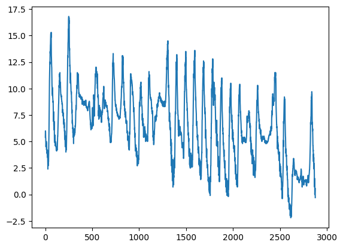
Show solution
[ ]:
import matplotlib as mpl
import matplotlib.pyplot as plt
%matplotlib inline
meteo.Temp.plot()
plt.show()
4.6 Exercise - Meteo pressure and raining#
✪ In the same plot as above show the pressure and amount of raining.
[ ]:
# write here
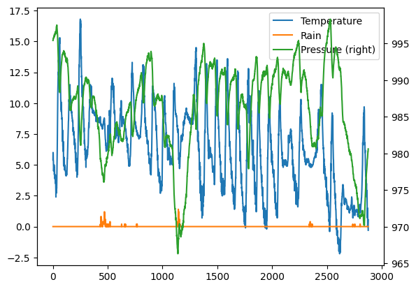
Show solution
[ ]:
meteo.Temp.plot(label="Temperature", legend=True)
meteo.Rain.plot(label="Rain", legend=True)
meteo.Pressure.plot(secondary_y=True, label="Pressure", legend=True);
plt.show()
5. Object values and strings#
In general, when we want to manipulate objects of a known type, say strings which have type str, we can write .str after a series and then treat the result like it were a single string, using any operator (es: slicing) or method that particular class allows us, plus others provided by pandas
Text in particular can be manipulated in many ways, for more details see pandas documentation)
5.1 Filter by textual values#
When we want to filter by text values, we can use .str.contains, here for example we select all the samples in the last days of february (which have timestamp containing 2016-02-2) :
[47]:
df[ df['time_stamp'].str.contains('2016-02-2') ]
[47]:
| time_stamp | temp_cpu | temp_h | temp_p | humidity | pressure | pitch | roll | yaw | mag_x | mag_y | mag_z | accel_x | accel_y | accel_z | gyro_x | gyro_y | gyro_z | reset | |
|---|---|---|---|---|---|---|---|---|---|---|---|---|---|---|---|---|---|---|---|
| 30442 | 2016-02-20 00:00:00 | 32.30 | 28.12 | 25.59 | 45.05 | 1008.01 | 1.47 | 51.82 | 51.18 | 9.215883 | -12.947023 | 4.066202 | -0.000612 | 0.018792 | 0.014558 | -0.000042 | 0.000275 | 0.000157 | 0 |
| 30443 | 2016-02-20 00:00:10 | 32.25 | 28.13 | 25.59 | 44.82 | 1008.02 | 0.81 | 51.53 | 52.21 | 8.710130 | -13.143595 | 3.499386 | -0.000718 | 0.019290 | 0.014667 | 0.000260 | 0.001011 | 0.000149 | 0 |
| 30444 | 2016-02-20 00:00:41 | 33.07 | 28.13 | 25.59 | 45.08 | 1008.09 | 0.68 | 51.69 | 57.36 | 7.383435 | -13.827667 | 4.438656 | -0.000700 | 0.018714 | 0.014598 | 0.000299 | 0.000343 | -0.000025 | 0 |
| 30445 | 2016-02-20 00:00:50 | 32.63 | 28.10 | 25.60 | 44.87 | 1008.07 | 1.42 | 52.13 | 59.95 | 7.292313 | -13.999682 | 4.517029 | -0.000657 | 0.018857 | 0.014565 | 0.000160 | 0.000349 | -0.000190 | 0 |
| 30446 | 2016-02-20 00:01:01 | 32.55 | 28.11 | 25.60 | 44.94 | 1008.07 | 1.41 | 51.86 | 61.83 | 6.699141 | -14.065591 | 4.448778 | -0.000678 | 0.018871 | 0.014564 | -0.000608 | -0.000381 | -0.000243 | 0 |
| ... | ... | ... | ... | ... | ... | ... | ... | ... | ... | ... | ... | ... | ... | ... | ... | ... | ... | ... | ... |
| 110864 | 2016-02-29 09:24:21 | 31.56 | 27.52 | 24.83 | 42.94 | 1005.83 | 1.58 | 49.93 | 129.60 | -15.169673 | -27.642610 | 1.563183 | -0.000682 | 0.017743 | 0.014646 | -0.000264 | 0.000206 | 0.000196 | 0 |
| 110865 | 2016-02-29 09:24:30 | 31.55 | 27.50 | 24.83 | 42.72 | 1005.85 | 1.89 | 49.92 | 130.51 | -15.832622 | -27.729389 | 1.785682 | -0.000736 | 0.017570 | 0.014855 | 0.000143 | 0.000199 | -0.000024 | 0 |
| 110866 | 2016-02-29 09:24:41 | 31.58 | 27.50 | 24.83 | 42.83 | 1005.85 | 2.09 | 50.00 | 132.04 | -16.646212 | -27.719479 | 1.629533 | -0.000647 | 0.017657 | 0.014799 | 0.000537 | 0.000257 | 0.000057 | 0 |
| 110867 | 2016-02-29 09:24:50 | 31.62 | 27.50 | 24.83 | 42.81 | 1005.88 | 2.88 | 49.69 | 133.00 | -17.270447 | -27.793136 | 1.703806 | -0.000835 | 0.017635 | 0.014877 | 0.000534 | 0.000456 | 0.000195 | 0 |
| 110868 | 2016-02-29 09:25:00 | 31.57 | 27.51 | 24.83 | 42.94 | 1005.86 | 2.17 | 49.77 | 134.18 | -17.885872 | -27.824149 | 1.293345 | -0.000787 | 0.017261 | 0.014380 | 0.000459 | 0.000076 | 0.000030 | 0 |
80427 rows × 19 columns
WARNING: DON’T use operator in:
You may be tempted to use it for filtering but you will soon discover it doesn’t work. The reason is it produces only one value but when filtering we want a series of booleans with \(n\) values, one per row.
5.2 Extracting strings#
To extract only the day from timestamp column, we can use str and slice operator with square brackets:
[50]:
df['time_stamp'].str[8:10]
[50]:
0 16
1 16
2 16
3 16
4 16
..
110864 29
110865 29
110866 29
110867 29
110868 29
Name: time_stamp, Length: 110869, dtype: object
6. Operations on columns#
Let’s see now how to select, add and trasform columns.
6.1 - Selecting columns#
If we want a subset of columns, we can express the names in a list like this:
NOTE: inside the external square brackets ther is a simple list without df!
[51]:
df[ ['temp_h', 'temp_p', 'time_stamp'] ]
[51]:
| temp_h | temp_p | time_stamp | |
|---|---|---|---|
| 0 | 27.57 | 25.01 | 2016-02-16 10:44:40 |
| 1 | 27.53 | 25.01 | 2016-02-16 10:44:50 |
| 2 | 27.53 | 25.01 | 2016-02-16 10:45:00 |
| 3 | 27.52 | 25.01 | 2016-02-16 10:45:10 |
| 4 | 27.54 | 25.01 | 2016-02-16 10:45:20 |
| ... | ... | ... | ... |
| 110864 | 27.52 | 24.83 | 2016-02-29 09:24:21 |
| 110865 | 27.50 | 24.83 | 2016-02-29 09:24:30 |
| 110866 | 27.50 | 24.83 | 2016-02-29 09:24:41 |
| 110867 | 27.50 | 24.83 | 2016-02-29 09:24:50 |
| 110868 | 27.51 | 24.83 | 2016-02-29 09:25:00 |
110869 rows × 3 columns
As always selecting the columns doens’t change the original dataframe:
[52]:
df.head()
[52]:
| time_stamp | temp_cpu | temp_h | temp_p | humidity | pressure | pitch | roll | yaw | mag_x | mag_y | mag_z | accel_x | accel_y | accel_z | gyro_x | gyro_y | gyro_z | reset | |
|---|---|---|---|---|---|---|---|---|---|---|---|---|---|---|---|---|---|---|---|
| 0 | 2016-02-16 10:44:40 | 31.88 | 27.57 | 25.01 | 44.94 | 1001.68 | 1.49 | 52.25 | 185.21 | -46.422753 | -8.132907 | -12.129346 | -0.000468 | 0.019439 | 0.014569 | 0.000942 | 0.000492 | -0.000750 | 20 |
| 1 | 2016-02-16 10:44:50 | 31.79 | 27.53 | 25.01 | 45.12 | 1001.72 | 1.03 | 53.73 | 186.72 | -48.778951 | -8.304243 | -12.943096 | -0.000614 | 0.019436 | 0.014577 | 0.000218 | -0.000005 | -0.000235 | 0 |
| 2 | 2016-02-16 10:45:00 | 31.66 | 27.53 | 25.01 | 45.12 | 1001.72 | 1.24 | 53.57 | 186.21 | -49.161878 | -8.470832 | -12.642772 | -0.000569 | 0.019359 | 0.014357 | 0.000395 | 0.000600 | -0.000003 | 0 |
| 3 | 2016-02-16 10:45:10 | 31.69 | 27.52 | 25.01 | 45.32 | 1001.69 | 1.57 | 53.63 | 186.03 | -49.341941 | -8.457380 | -12.615509 | -0.000575 | 0.019383 | 0.014409 | 0.000308 | 0.000577 | -0.000102 | 0 |
| 4 | 2016-02-16 10:45:20 | 31.66 | 27.54 | 25.01 | 45.18 | 1001.71 | 0.85 | 53.66 | 186.46 | -50.056683 | -8.122609 | -12.678341 | -0.000548 | 0.019378 | 0.014380 | 0.000321 | 0.000691 | 0.000272 | 0 |
6.2 - Adding columns#
It’s possible to obtain new columns by calculating them from other columns in a very natural way. For example, we get new column mag_tot, that is the absolute magnetic field taken from space station by mag_x, mag_y, e mag_z, and then plot it:
[53]:
df['mag_tot'] = df['mag_x']**2 + df['mag_y']**2 + df['mag_z']**2
[54]:
df.mag_tot.plot()
plt.show()
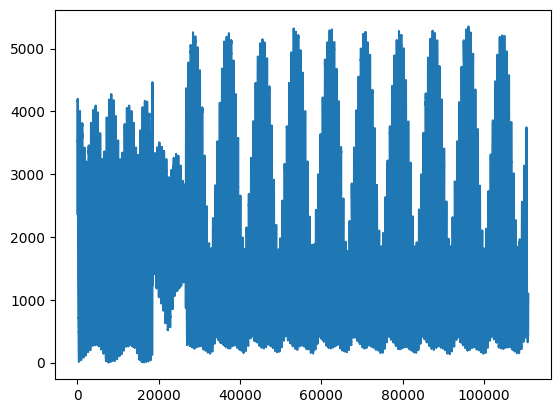
Let’s find when the magnetic field was maximal:
[55]:
df['time_stamp'][(df.mag_tot == df.mag_tot.values.max())]
[55]:
96156 2016-02-27 16:12:31
Name: time_stamp, dtype: object
Try filling in the value found on the website isstracker.com/historical, you should find the positions where the magnetic field is at the highest.
6.2.1 Exercise: Meteo temperature in Fahrenheit#
In meteo dataframe, create a column Temp (Fahrenheit) with the temperature measured in Fahrenheit degrees.
Formula to calculate conversion from Celsius degrees (C):
\(Fahrenheit = \frac{9}{5}C + 32\)
[ ]:
# write here
Show solution
[ ]:
meteo['Temp (Fahrenheit)'] = meteo['Temp']* 9/5 + 32
meteo.head()
6.2.2 Exercise - Pressure vs Temperature#
Pressure should be directly proportional to temperature in a closed environment Gay-Lussac’s law:
\(\frac{P}{T} = k\)
Does this holds true for meteo dataset? Try to find out by direct calculation of the formula and compare with corr() method results.
[ ]:
# write here
Show solution
[ ]:
# as expected, in an open environment there is not much linear correlation
print(meteo.corr())
meteo['Pressure'] / meteo['Temp']
6.3 Writing in columns filtered with loc#
The loc property allows to filter rows according to a property and select a column, which can be new. In this case, for rows where cpu temperature is too high, we write True value in the fields of the column with header'cpu_too_hot':
[59]:
df.loc[(df.temp_cpu > 31.68),'cpu_too_hot'] = True
Let’s see the resulting table (scroll until the end to see the new column). We note the values from the rows we did not filter are represented with NaN, which literally means not a number :
[60]:
df.head()
[60]:
| time_stamp | temp_cpu | temp_h | temp_p | humidity | pressure | pitch | roll | yaw | mag_x | ... | mag_z | accel_x | accel_y | accel_z | gyro_x | gyro_y | gyro_z | reset | mag_tot | cpu_too_hot | |
|---|---|---|---|---|---|---|---|---|---|---|---|---|---|---|---|---|---|---|---|---|---|
| 0 | 2016-02-16 10:44:40 | 31.88 | 27.57 | 25.01 | 44.94 | 1001.68 | 1.49 | 52.25 | 185.21 | -46.422753 | ... | -12.129346 | -0.000468 | 0.019439 | 0.014569 | 0.000942 | 0.000492 | -0.000750 | 20 | 2368.337207 | True |
| 1 | 2016-02-16 10:44:50 | 31.79 | 27.53 | 25.01 | 45.12 | 1001.72 | 1.03 | 53.73 | 186.72 | -48.778951 | ... | -12.943096 | -0.000614 | 0.019436 | 0.014577 | 0.000218 | -0.000005 | -0.000235 | 0 | 2615.870247 | True |
| 2 | 2016-02-16 10:45:00 | 31.66 | 27.53 | 25.01 | 45.12 | 1001.72 | 1.24 | 53.57 | 186.21 | -49.161878 | ... | -12.642772 | -0.000569 | 0.019359 | 0.014357 | 0.000395 | 0.000600 | -0.000003 | 0 | 2648.484927 | NaN |
| 3 | 2016-02-16 10:45:10 | 31.69 | 27.52 | 25.01 | 45.32 | 1001.69 | 1.57 | 53.63 | 186.03 | -49.341941 | ... | -12.615509 | -0.000575 | 0.019383 | 0.014409 | 0.000308 | 0.000577 | -0.000102 | 0 | 2665.305485 | True |
| 4 | 2016-02-16 10:45:20 | 31.66 | 27.54 | 25.01 | 45.18 | 1001.71 | 0.85 | 53.66 | 186.46 | -50.056683 | ... | -12.678341 | -0.000548 | 0.019378 | 0.014380 | 0.000321 | 0.000691 | 0.000272 | 0 | 2732.388620 | NaN |
5 rows × 21 columns
Pandas is a very flexible library, and gives several methods to obtain the same results.
For example, if we want to write in a column some values where rows satisfy a given criteria, and other values when the condition isn’t satisfied, we can use a single command np.where
Proviamo ad aggiungere una colonna controllo_pressione che mi dice se la pressione is below or above the average (scroll till the end to see it):
[61]:
avg_pressure = df.pressure.values.mean()
[62]:
df['check_p'] = np.where(df.pressure <= avg_pressure, 'below', 'over')
Let’s select some rows where we know the variation is evident:
[63]:
df.iloc[29735:29745]
[63]:
| time_stamp | temp_cpu | temp_h | temp_p | humidity | pressure | pitch | roll | yaw | mag_x | ... | accel_x | accel_y | accel_z | gyro_x | gyro_y | gyro_z | reset | mag_tot | cpu_too_hot | check_p | |
|---|---|---|---|---|---|---|---|---|---|---|---|---|---|---|---|---|---|---|---|---|---|
| 29735 | 2016-02-19 22:00:51 | 32.24 | 28.03 | 25.52 | 44.55 | 1008.11 | 1.83 | 52.10 | 272.50 | 0.666420 | ... | -0.000630 | 0.018846 | 0.014576 | 0.000127 | 0.000002 | 0.000234 | 0 | 481.466349 | True | below |
| 29736 | 2016-02-19 22:01:00 | 32.18 | 28.05 | 25.52 | 44.44 | 1008.11 | 1.16 | 51.73 | 273.26 | 1.028125 | ... | -0.000606 | 0.018716 | 0.014755 | 0.000536 | 0.000550 | 0.000103 | 0 | 476.982306 | True | below |
| 29737 | 2016-02-19 22:01:11 | 32.22 | 28.04 | 25.52 | 44.40 | 1008.12 | 2.10 | 52.16 | 274.66 | 1.416078 | ... | -0.000736 | 0.018774 | 0.014626 | 0.000717 | 0.000991 | 0.000309 | 0 | 484.654588 | True | below |
| 29738 | 2016-02-19 22:01:20 | 32.18 | 28.04 | 25.52 | 44.38 | 1008.14 | 1.38 | 52.01 | 275.22 | 1.702723 | ... | -0.000595 | 0.018928 | 0.014649 | 0.000068 | 0.000222 | 0.000034 | 0 | 485.716793 | True | over |
| 29739 | 2016-02-19 22:01:30 | 32.24 | 28.03 | 25.52 | 44.43 | 1008.10 | 1.42 | 51.98 | 275.80 | 1.910006 | ... | -0.000619 | 0.018701 | 0.014606 | -0.000093 | -0.000080 | 0.000018 | 0 | 481.830794 | True | below |
| 29740 | 2016-02-19 22:01:40 | 32.26 | 28.04 | 25.52 | 44.37 | 1008.11 | 1.47 | 52.08 | 277.11 | 2.413142 | ... | -0.000574 | 0.018719 | 0.014614 | 0.000451 | 0.000524 | 0.000078 | 0 | 486.220778 | True | below |
| 29741 | 2016-02-19 22:01:50 | 32.22 | 28.04 | 25.52 | 44.49 | 1008.15 | 1.60 | 52.17 | 278.52 | 2.929722 | ... | -0.000692 | 0.018716 | 0.014602 | 0.000670 | 0.000455 | 0.000109 | 0 | 480.890508 | True | over |
| 29742 | 2016-02-19 22:02:01 | 32.21 | 28.04 | 25.52 | 44.48 | 1008.13 | 1.47 | 52.24 | 279.44 | 3.163792 | ... | -0.000639 | 0.019034 | 0.014692 | 0.000221 | 0.000553 | 0.000138 | 0 | 483.919953 | True | over |
| 29743 | 2016-02-19 22:02:10 | 32.23 | 28.05 | 25.52 | 44.45 | 1008.11 | 1.88 | 51.81 | 280.36 | 3.486707 | ... | -0.000599 | 0.018786 | 0.014833 | -0.000020 | 0.000230 | 0.000134 | 0 | 476.163984 | True | below |
| 29744 | 2016-02-19 22:02:21 | 32.24 | 28.05 | 25.52 | 44.60 | 1008.12 | 1.26 | 51.83 | 281.22 | 3.937303 | ... | -0.000642 | 0.018701 | 0.014571 | 0.000042 | 0.000156 | 0.000071 | 0 | 478.775309 | True | below |
10 rows × 22 columns
6.3 Transforming columns#
Suppose we want to convert all values of column temperature which are floats to integers.
We know that to convert a single float to an integer there the predefined python function int
[64]:
int(23.7)
[64]:
23
How to apply such function to all the elements of the column humidity.
To do so, we can call the transform method and pass to it the function object int as a parameter
NOTE: there are no round parenthesis after int !!!
[65]:
df['humidity'].transform(int)
[65]:
0 44
1 45
2 45
3 45
4 45
..
110864 42
110865 42
110866 42
110867 42
110868 42
Name: humidity, Length: 110869, dtype: int64
Just to be clear what passing a function means, let’s see other two completely equivalent ways we could have used to pass the function.
Defining a function: We could have defined a function myf like this (notice the function MUST RETURN something !)
[66]:
def myf(x):
return int(x)
df['humidity'].transform(myf)
[66]:
0 44
1 45
2 45
3 45
4 45
..
110864 42
110865 42
110866 42
110867 42
110868 42
Name: humidity, Length: 110869, dtype: int64
lambda function: We could have used as well a lambda function, that is, a function without a name which is defined on one line:
[67]:
df['humidity'].transform( lambda x: int(x) )
[67]:
0 44
1 45
2 45
3 45
4 45
..
110864 42
110865 42
110866 42
110867 42
110868 42
Name: humidity, Length: 110869, dtype: int64
Regardless of the way we choose to pass the function, transform method does NOT change the original dataframe:
[68]:
df.info()
<class 'pandas.core.frame.DataFrame'>
RangeIndex: 110869 entries, 0 to 110868
Data columns (total 22 columns):
# Column Non-Null Count Dtype
--- ------ -------------- -----
0 time_stamp 110869 non-null object
1 temp_cpu 110869 non-null float64
2 temp_h 110869 non-null float64
3 temp_p 110869 non-null float64
4 humidity 110869 non-null float64
5 pressure 110869 non-null float64
6 pitch 110869 non-null float64
7 roll 110869 non-null float64
8 yaw 110869 non-null float64
9 mag_x 110869 non-null float64
10 mag_y 110869 non-null float64
11 mag_z 110869 non-null float64
12 accel_x 110869 non-null float64
13 accel_y 110869 non-null float64
14 accel_z 110869 non-null float64
15 gyro_x 110869 non-null float64
16 gyro_y 110869 non-null float64
17 gyro_z 110869 non-null float64
18 reset 110869 non-null int64
19 mag_tot 110869 non-null float64
20 cpu_too_hot 105315 non-null object
21 check_p 110869 non-null object
dtypes: float64(18), int64(1), object(3)
memory usage: 18.6+ MB
If we want to add a new column, say humidity_int, we have to explicitly assign the result of transform to a new series:
[69]:
df['humidity_int'] = df['humidity'].transform( lambda x: int(x) )
Notice how pandas automatically infers type int64 for the newly created column:
[70]:
df.info()
<class 'pandas.core.frame.DataFrame'>
RangeIndex: 110869 entries, 0 to 110868
Data columns (total 23 columns):
# Column Non-Null Count Dtype
--- ------ -------------- -----
0 time_stamp 110869 non-null object
1 temp_cpu 110869 non-null float64
2 temp_h 110869 non-null float64
3 temp_p 110869 non-null float64
4 humidity 110869 non-null float64
5 pressure 110869 non-null float64
6 pitch 110869 non-null float64
7 roll 110869 non-null float64
8 yaw 110869 non-null float64
9 mag_x 110869 non-null float64
10 mag_y 110869 non-null float64
11 mag_z 110869 non-null float64
12 accel_x 110869 non-null float64
13 accel_y 110869 non-null float64
14 accel_z 110869 non-null float64
15 gyro_x 110869 non-null float64
16 gyro_y 110869 non-null float64
17 gyro_z 110869 non-null float64
18 reset 110869 non-null int64
19 mag_tot 110869 non-null float64
20 cpu_too_hot 105315 non-null object
21 check_p 110869 non-null object
22 humidity_int 110869 non-null int64
dtypes: float64(18), int64(2), object(3)
memory usage: 19.5+ MB
7. Other exercises#
7.1 Exercise - Air pollutants#
Let’s try analzying the hourly data from air quality monitoring stations from Autonomous Province of Trento.
Source: dati.trentino.it
7.1.1 - load the file#
✪ Load the file aria.csv in pandas
IMPORTANT 1: put the dataframe into the variable aria, so not to confuse it with the previous datasets.
IMPORTANT 2: use encoding 'latin-1' (otherwise you might get weird load errors according to your operating system)
IMPORTANT 3: if you also receive other strange errors, try adding the parameter engine=python
[ ]:
# write here
Show solution
[ ]:
import pandas as pd
import numpy as np
# remember the encoding !
aria = pd.read_csv('data/aria.csv', encoding='latin-1')
aria.info()
7.1.2 - pollutants average#
✪ find the average of PM10 pollutants at Parco S. Chiara (average on all days). You should obtain the value 11.385752688172044
[ ]:
# write here
Show solution
[ ]:
aria[(aria.Stazione == 'Parco S. Chiara') & (aria.Inquinante == 'PM10')].Valore.values.mean()
[ ]:
aria[(aria.Stazione == 'Parco S. Chiara') & (aria.Inquinante == 'PM10')]
| Stazione | Inquinante | Data | Ora | Valore | Unità di misura | |
|---|---|---|---|---|---|---|
| 0 | Parco S. Chiara | PM10 | 2019-05-04 | 1 | 17.0 | µg/mc |
| 1 | Parco S. Chiara | PM10 | 2019-05-04 | 2 | 19.0 | µg/mc |
| 2 | Parco S. Chiara | PM10 | 2019-05-04 | 3 | 17.0 | µg/mc |
| 3 | Parco S. Chiara | PM10 | 2019-05-04 | 4 | 15.0 | µg/mc |
| 4 | Parco S. Chiara | PM10 | 2019-05-04 | 5 | 13.0 | µg/mc |
| ... | ... | ... | ... | ... | ... | ... |
| 739 | Parco S. Chiara | PM10 | 2019-06-03 | 20 | 33.0 | µg/mc |
| 740 | Parco S. Chiara | PM10 | 2019-06-03 | 21 | 40.0 | µg/mc |
| 741 | Parco S. Chiara | PM10 | 2019-06-03 | 22 | 31.0 | µg/mc |
| 742 | Parco S. Chiara | PM10 | 2019-06-03 | 23 | 31.0 | µg/mc |
| 743 | Parco S. Chiara | PM10 | 2019-06-03 | 24 | 31.0 | µg/mc |
744 rows × 6 columns
[ ]:
aria[(aria.Stazione == 'Parco S. Chiara') & (aria.Inquinante == 'PM10') & (aria.Data == '2019-05-07')]
| Stazione | Inquinante | Data | Ora | Valore | Unità di misura | |
|---|---|---|---|---|---|---|
| 72 | Parco S. Chiara | PM10 | 2019-05-07 | 1 | 7.0 | µg/mc |
| 73 | Parco S. Chiara | PM10 | 2019-05-07 | 2 | 9.0 | µg/mc |
| 74 | Parco S. Chiara | PM10 | 2019-05-07 | 3 | 10.0 | µg/mc |
| 75 | Parco S. Chiara | PM10 | 2019-05-07 | 4 | 9.0 | µg/mc |
| 76 | Parco S. Chiara | PM10 | 2019-05-07 | 5 | 12.0 | µg/mc |
| 77 | Parco S. Chiara | PM10 | 2019-05-07 | 6 | 16.0 | µg/mc |
| 78 | Parco S. Chiara | PM10 | 2019-05-07 | 7 | 19.0 | µg/mc |
| 79 | Parco S. Chiara | PM10 | 2019-05-07 | 8 | 20.0 | µg/mc |
| 80 | Parco S. Chiara | PM10 | 2019-05-07 | 9 | 18.0 | µg/mc |
| 81 | Parco S. Chiara | PM10 | 2019-05-07 | 10 | 12.0 | µg/mc |
| 82 | Parco S. Chiara | PM10 | 2019-05-07 | 11 | 9.0 | µg/mc |
| 83 | Parco S. Chiara | PM10 | 2019-05-07 | 12 | 9.0 | µg/mc |
| 84 | Parco S. Chiara | PM10 | 2019-05-07 | 13 | 11.0 | µg/mc |
| 85 | Parco S. Chiara | PM10 | 2019-05-07 | 14 | 12.0 | µg/mc |
| 86 | Parco S. Chiara | PM10 | 2019-05-07 | 15 | 14.0 | µg/mc |
| 87 | Parco S. Chiara | PM10 | 2019-05-07 | 16 | 16.0 | µg/mc |
| 88 | Parco S. Chiara | PM10 | 2019-05-07 | 17 | 15.0 | µg/mc |
| 89 | Parco S. Chiara | PM10 | 2019-05-07 | 18 | 16.0 | µg/mc |
| 90 | Parco S. Chiara | PM10 | 2019-05-07 | 19 | 18.0 | µg/mc |
| 91 | Parco S. Chiara | PM10 | 2019-05-07 | 20 | 21.0 | µg/mc |
| 92 | Parco S. Chiara | PM10 | 2019-05-07 | 21 | 22.0 | µg/mc |
| 93 | Parco S. Chiara | PM10 | 2019-05-07 | 22 | 20.0 | µg/mc |
| 94 | Parco S. Chiara | PM10 | 2019-05-07 | 23 | 22.0 | µg/mc |
| 95 | Parco S. Chiara | PM10 | 2019-05-07 | 24 | 22.0 | µg/mc |
7.1.3 - PM10 chart#
✪ Use plt.plot as seen in a previous example (so by directly passing the relevant Pandas series), show in a chart the values of PM10 during May 7h, 2019.
[ ]:
# write here
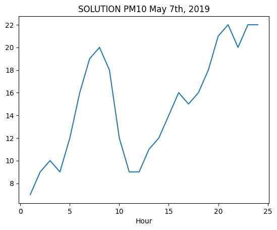
Show solution
[ ]:
import matplotlib as mpl
import matplotlib.pyplot as plt
%matplotlib inline
filtered = aria[(aria.Stazione == 'Parco S. Chiara') & (aria.Inquinante == 'PM10') & (aria.Data == '2019-05-07')]
plt.plot(filtered['Ora'], filtered['Valore'] )
plt.title('SOLUTION PM10 May 7th, 2019')
plt.xlabel('Hour')
plt.show()
7.2 Exercise - Game of Thrones#
Open with Pandas the file game-of-thrones.csv which holds episodes from various years.
use
UTF-8encodingIMPORTANT: place the dataframe into the variable
game, so not to confuse it with previous dataframes
Data source: Kaggle - License: CC0: Public Domain
7.2.1 Exercise - fan#
You are given a dictionary favorite with the most liked episodes of a group of people, who unfortunately don’t remember exactly the various titles which are often incomplete: Select the favorite episodes of Paolo and Chiara.
assume the capitalization in
favoriteis the correct oneNOTE: the dataset contains insidious double quotes around the titles, but if you write the code in the right way it shouldn’t be a problem
[ ]:
import pandas as pd
import numpy as np
favorite = {
"Paolo" : 'Winter Is',
"Chiara" : 'Wolf and the Lion',
"Anselmo" : 'Fire and',
"Letizia" : 'Garden of'
}
# write here
Show solution
[ ]:
import pandas as pd
import numpy as np
favorite = {
"Paolo" : 'Winter Is',
"Chiara" : 'Wolf and the Lion',
"Anselmo" : 'Fire and',
"Letizia" : 'Garden of'
}
game = pd.read_csv('data/game-of-thrones.csv', encoding='UTF-8')
titolidf = game[ (game["Title"].str.contains(favorite['Paolo'])) | (game["Title"].str.contains(favorite['Chiara']))]
titolidf
7.2.2 Esercise - first airing#
Select all the episodes which have been aired the first time in a given year (Original air date column)
NOTE:
yearis given as anint
[ ]:
year = 17
# write here
Show solution
[ ]:
year = 17
annidf = game[ game['Original air date'].str[-2:] == str(year) ]
annidf
7.3 Exercise - Healthcare facilities#
✪✪ Let’s examine the dataset SANSTRUT001.csv which contains the healthcare facilities of Trentino region, and for each tells the type of assistance it offers (clinical activity, diagnostics, etc), the code and name of the communality where it is located.
Data source: dati.trentino.it Licenza: Creative Commons Attribution 4.0
Write a function which takes as input a town code and a text string, opens the file with pandas (encoding UTF-8) and:
PRINTS also the number of found rows
RETURNS a dataframe with selected only the rows having that town code and which contain the string in the column
ASSISTENZA. The returned dataset must have only the columnsSTRUTTURA,ASSISTENZA,COD_COMUNE,COMUNE.
[ ]:
import pandas as pd
import numpy as np
# write here
Show solution
[ ]:
import pandas as pd
import numpy as np
def strutsan(cod_comune, assistenza):
print('***** SOLUTION')
strudf = pd.read_csv('data/SANSTRUT001.csv', encoding='UTF-8')
res = strudf[((strudf['COD_COMUNE'] == cod_comune) & strudf['ASSISTENZA'].str.contains(assistenza))]
print("Found", res.shape[0], "facilities")
return res[ ['STRUTTURA', 'ASSISTENZA', 'COD_COMUNE', 'COMUNE'] ]
[80]:
strutsan(22050, '') # no ASSISTENZA filter
***** SOLUTION
Found 6 facilities
[80]:
| STRUTTURA | ASSISTENZA | COD_COMUNE | COMUNE | |
|---|---|---|---|---|
| 0 | PRESIDIO OSPEDALIERO DI CAVALESE | ATTIVITA` CLINICA | 22050 | CAVALESE |
| 1 | PRESIDIO OSPEDALIERO DI CAVALESE | DIAGNOSTICA STRUMENTALE E PER IMMAGINI | 22050 | CAVALESE |
| 2 | PRESIDIO OSPEDALIERO DI CAVALESE | ATTIVITA` DI LABORATORIO | 22050 | CAVALESE |
| 3 | CENTRO SALUTE MENTALE CAVALESE | ASSISTENZA PSICHIATRICA | 22050 | CAVALESE |
| 4 | CENTRO DIALISI CAVALESE | ATTIVITA` CLINICA | 22050 | CAVALESE |
| 5 | CONSULTORIO CAVALESE | ATTIVITA` DI CONSULTORIO MATERNO-INFANTILE | 22050 | CAVALESE |
[81]:
strutsan(22205, 'CLINICA')
***** SOLUTION
Found 16 facilities
[81]:
| STRUTTURA | ASSISTENZA | COD_COMUNE | COMUNE | |
|---|---|---|---|---|
| 59 | PRESIDIO OSPEDALIERO S.CHIARA | ATTIVITA` CLINICA | 22205 | TRENTO |
| 62 | CENTRO DIALISI TRENTO | ATTIVITA` CLINICA | 22205 | TRENTO |
| 63 | POLIAMBULATORI S.CHIARA | ATTIVITA` CLINICA | 22205 | TRENTO |
| 64 | PRESIDIO OSPEDALIERO VILLA IGEA | ATTIVITA` CLINICA | 22205 | TRENTO |
| 73 | OSPEDALE CLASSIFICATO S.CAMILLO | ATTIVITA` CLINICA | 22205 | TRENTO |
| 84 | NEUROPSICHIATRIA INFANTILE - UONPI 1 | ATTIVITA` CLINICA | 22205 | TRENTO |
| 87 | CASA DI CURA VILLA BIANCA SPA | ATTIVITA` CLINICA | 22205 | TRENTO |
| 90 | CENTRO SERVIZI SANITARI | ATTIVITA` CLINICA | 22205 | TRENTO |
| 93 | PSICOLOGIA CLINICA | ATTIVITA` CLINICA | 22205 | TRENTO |
| 122 | ASSOCIAZIONE TRENTINA SCLEROSI MULTIPLA, ONLUS | ATTIVITA` CLINICA | 22205 | TRENTO |
| 123 | ANFFAS TRENTINO ONLUS | ATTIVITA` CLINICA | 22205 | TRENTO |
| 124 | COOPERATIVA SOCIALE IRIFOR DEL TRENTINO ONLUS | ATTIVITA` CLINICA | 22205 | TRENTO |
| 126 | AGSAT ASSOCIAZIONE GENITORI SOGGETTI AUTISTICI... | ATTIVITA` CLINICA | 22205 | TRENTO |
| 127 | AZIENDA PUBBLICA SERVIZI ALLA PERSONA - RSA PO... | ATTIVITA` CLINICA | 22205 | TRENTO |
| 130 | CST TRENTO | ATTIVITA` CLINICA | 22205 | TRENTO |
| 133 | A.P.S.P. 'BEATO DE TSCHIDERER' - AMB. LOGO-AUD... | ATTIVITA` CLINICA | 22205 | TRENTO |
[82]:
strutsan(22205, 'LABORATORIO')
***** SOLUTION
Found 5 facilities
[82]:
| STRUTTURA | ASSISTENZA | COD_COMUNE | COMUNE | |
|---|---|---|---|---|
| 61 | PRESIDIO OSPEDALIERO S.CHIARA | ATTIVITA` DI LABORATORIO | 22205 | TRENTO |
| 85 | LABORATORI ADIGE SRL | ATTIVITA` DI LABORATORIO | 22205 | TRENTO |
| 86 | LABORATORIO DRUSO SRL | ATTIVITA` DI LABORATORIO | 22205 | TRENTO |
| 89 | CASA DI CURA VILLA BIANCA SPA | ATTIVITA` DI LABORATORIO | 22205 | TRENTO |
| 92 | CENTRO SERVIZI SANITARI | ATTIVITA` DI LABORATORIO | 22205 | TRENTO |
Continue#
Go on with Pandas 2 - Advanced Operations